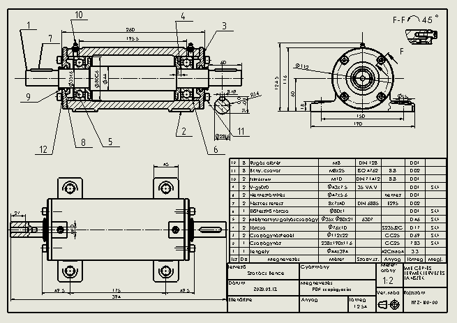
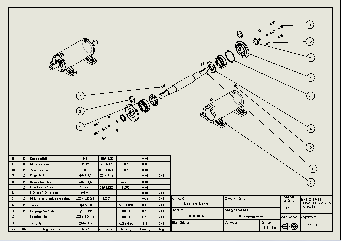
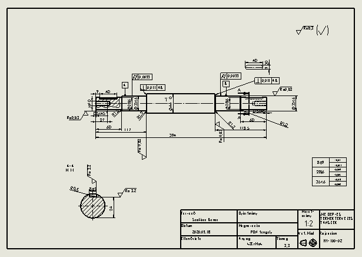

PROJEKTEK
Solidworks programban pdn tengely, és tengelyház modellezés. Itt találhatók az összeállítási rajzok és a robbantott szerelési ábrák. Jelen esetben ezek az egyszerőbb modellek csak extrude és revolve paranccsal elkészíthetők, az alakmódosító sajátosságokat figyelmen kívül hagyva.
  